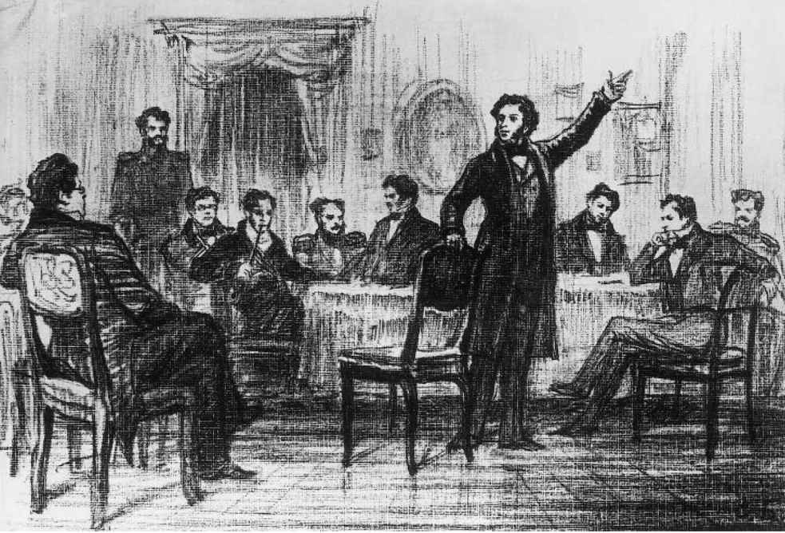
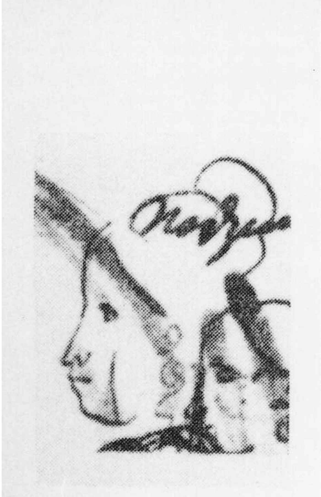

（普希金，《鲁斯兰与柳德米拉》献辞，1820年）
说起翻译普希金有多难，没有什么比《“纪念碑”》里的最后一句更能说明问题了。在英语中，这一句听上去是标准的陈词滥调，就像从某个“交朋结友、登高一呼”的人生指南里摘录的句子。还是语域起到了关键作用：俄语的“glupets ”一词有种亲民的调子，因而原句更加贴切的译法似乎是“和傻子打啥口水仗”。即便如此，现代读者还是会不解，为何这最后两句诗把如此不搭界的主题组合在一起。诗人先是对自己的缪斯庄严地发出号令：“诗神，继续听从上帝的意旨吧”，然后又来了这句看上去不足挂齿的人情世故之道，其间究竟有何联系？（无疑，这句话跟《叶甫盖尼·奥涅金》的草稿上匆匆写下的据称引用《可兰经》的那句“别跟愚人较量”有些关系，不过既然引用这句话的是叶甫盖尼本人，而在此之前他刚刚公然轻浮地说了一句“《可兰经》里还是有不少常识的”，这里，圣言文本便被贬为日常生活行为指南了。）
然而看了《“纪念碑”》的草稿就知道，“和愚蠢的人们又何必较量”这句话从这首诗创作之始就坚定地存在于普希金的头脑中。在最后三节中，这是诗人唯一毫不犹豫地直接写在最终文本中的一句。认为诗人这个身份不仅跟宗教和神秘表象的超验世界有关，同时也跟上流社会的陈腐庸俗密不可分这一观点，是普希金的后期诗作中频繁出现的主题。举例来说，《诗人》（1827）的结构就围绕着（上流社会的）“世俗无谓的烦忧”与（诗意灵感的）“神圣话语”之间的对立，这个对立贯穿诗人本人的一生，他一直在这两个领域间穿梭。他既借助于艺术家与世隔绝的浪漫主义神话，也引出了另一个与之对立的神话，即艺术家都是正派人，也就是谈吐风雅的世俗之人。这一神话是18世纪末由尼古拉·卡拉姆津引入俄罗斯文化的，在《为什么俄罗斯的文学天才凤毛麟角》（1802）这篇著名的文章中，卡拉姆津断言，如果无法得体地进入文雅的上流社会，一个作家无论多么博学，都很难养成自己的鉴赏品味。
在18世纪末和19世纪初的俄罗斯，无论男女，阅读文学都是一项必要的文化素养；的确，写作本身也被视为得体的社交技能。贵族和绅士阶层的很多女性人手一本纪念簿，那是剪贴簿和摘录本的结合体，里面有朋友题写的赞美诗（“抒情诗”）、象征爱情和友谊的格律诗以及诙谐的韵句，写在素描人像和水彩风景画旁边。杂志和指南会提供一些得体文字的模板供她们记在纪念簿上（被问到而无话可说会显得不善交际）。在这种情况下，写诗就成了彬彬有礼的谈话的延伸，是一种高雅的游戏。
根据社交习俗，一般来说，应该由男人来写诗赠献给女人，用华丽的辞藻赞美她们的容貌、智慧、才思和品味。卡拉姆津曾在他的《致女人的长信》（1796）一文中赞美女人的感知能力和精神深度，他认为上流社会女人的语言应该是俄罗斯文化的典范：在《为什么俄罗斯的文学天才凤毛麟角》中，他提到“那些妩媚的女人［……］我们不妨偷听她们的谈话，以便用文雅贴切的表达来润色小说”。
因此，至少对某些文学素材而言，女人被视为理想的读者，还是作家们希望在自己的小说中模仿的谈吐出色的高手。这一认知被付诸实践的特定地点是私人宅邸或公寓的厅堂（zala ）或客厅（gostinaya ）。从18世纪末、19世纪到20世纪初，社交界的头面人物（其中很多是女人）每周选一天举办家庭招待会已成习俗。作家和音乐家会应邀当众表演他们的作品，来宾中或许会有其他艺术家和著名的外国人以及俄罗斯社会名流。最有名的此类“沙龙”（它们在19世纪末开始广为人知）之一就在1820年代初公爵夫人季娜伊达·沃尔孔斯卡娅在莫斯科的宅邸：普希金是出席的作家之一，他还在女主人的纪念簿上写下了表示敬意的赞诗。
但切记不要夸大沙龙的重要性，把它说成是文学机构（相反，它只是一般上流文化的交际手段，引用1765年译成俄文的一本守则里的话，在这个地方男人能获得“那种灵魂和品味的温柔抚慰，很多人认为那是女人独有的天分”）。跟16世纪和17世纪的法国不同，在19世纪初的俄罗斯，男女共处的场合不宜进行那种（只有男人的地方会展开的）严肃的文学讨论，而更适合轻松调侃和打情骂俏般的口头辩论。艺术家会表演适合这一场景的作品（诙谐机智而非深刻的作品）。虽然沙龙女主人有时会用她们自己的作品来款待宾客（沃尔孔斯卡娅的沙龙就是这样），但大部分时候，女性的贡献仅限于适婚的姑娘在钢琴上炫耀她们的歌唱或演奏才艺（就像简·奥斯汀小说中的那些客厅一样）。一旦浪漫主义把艺术是一种神圣行为，应该受到读者、观众或听众的尊重和无声的赞同这一观念引入俄国，出席沙龙在艺术家们看来就越来越无法忍受。有一次，在沃尔孔斯卡娅的沙龙上，人们频频要求普希金朗诵一首娱乐诗，据说他不胜其烦，便背诵了自己的《诗人和群氓》作为回应，毫不留情地抨击了愚蠢的读者预期。（这个故事的准确性存疑，因为沃尔孔斯卡娅于1828年离开俄罗斯，而那首诗的写作日期是同一年，但这个故事能够流传，本身就表明了时人的普遍态度。）在19世纪中期俄罗斯最有才华的浪漫主义女诗人卡罗利娜·帕夫洛娃的中篇小说《双重生活》（1846）中，诗人们在女主人公母亲的客厅里对着一群对艺术一无所知的观众背诵自己的诗作，那些人认为艺术不过是主业之外的消遣，而他们的主业是促成一门有利可图的亲事。

图15 文学社朗诵自己的诗歌。在整个沙龙时代，诗人们更偏爱在这种只有男性参的加聚“绿会灯上”发表普严希肃金的为新作品
正如帕夫洛娃的小说所示，到1840年代，上流文化与文学文化就多少显得有些格格不入了，在这种品味的变化中，重量级文学杂志（它在俄语中被亲切地称为“厚杂志”）起到了相当重要的作用。这类杂志的编委会清一色由政治立场强硬的个人组成，既有激进派，也有保守派；文学文本与政治论说齐头并进（或者文学文本本身就是一种变相的政治论说）。像“抒情短诗”或“社会逸闻”这类体裁本身就表明人很难一面表达感情，一面又要符合社会行为规范，因而在新时代就失去了风头。人们更偏爱表现俄罗斯工人阶级生活的歌谣、关于妇女解放的励志故事以及对农民苦难的描述。表现缱绻柔情的诗歌成了边缘体裁。阿列克谢·托尔斯泰和卡罗利娜·帕夫洛娃两人都曾写过以“禁恋”为主题的好诗，但从1850年代起，这类素材大体上变成了客厅言情小说独享的特权，该体裁的文化影响力（虽然不过尔尔）主要源于它的音乐场景而非文学关联。到20世纪初，那些遵循浪漫传统的诗人都是些边缘人物，如“G.加林娜”（格拉菲拉·玛莫西娜的笔名）或“K. R.”（K. K.罗曼诺夫大公的笔名）。虽然他们的作品很受欢迎，但在当时的文学体制下，这些人地位很低。1915年，玛丽埃塔·沙吉尼扬（后来成为社会主义现实主义小说家，但当时她还是个不入流的现代主义诗人）指责她的朋友、作曲家拉赫玛尼诺夫的诗歌品味太差（他早期的声乐套曲曾使用过加林娜等人的诗作），并劝说他在下一部声乐套曲中使用更有文学抱负的素材。
当然，俄罗斯现代主义者们也有他们自己的沙龙，不过这些可一点儿不像过去的上流阶层聚会，也不像19世纪末20世纪初圣彼得堡和莫斯科的奢华客厅。在季娜伊达·吉皮乌斯和德米特里·梅列日科夫斯基的家里，话题变成了招魂术、玄学和神秘宗教；在维亚切斯拉夫·伊万诺夫的顶层公寓，也就是所谓的“高塔”里举办的周三聚会上，宾客们散坐在天鹅绒坐垫上，屋里挂着充满异国情调的窗帘。这样的奢侈在俄国革命之后并没有存续太久，但即便在苏联，也有些德高望重的作家主持聚会，难说不是另一种沙龙。举例来说，安娜·阿赫玛托娃就给她喜爱的宾客灌输了不少自己关于文学、艺术和当代文学人物的格言式评价；在作家协会身居高位的社会主义现实主义作家薇拉·潘诺娃也曾大宴宾客，趋之若鹜的客人们不光是为高妙生动的言论而来，如果可以的话，还想请她帮忙给出版社写封介绍信。
然而，在1910年代遍布莫斯科和圣彼得堡的现代主义圈子和艺术家酒馆中，标新立异成为主要的文化价值观。它们的名字“——流浪狗”“戏子客栈”——本身就彰显着放浪不羁的边缘化的风尚。和19世纪初的上流社会一样，这种文化也信奉“整个世界都是舞台”，更看重的是自信的表演而非真诚；然而艺术家如今扮演的角色远比1820年代和1830年代更加放肆夸张，彼时作家们还没有像如今这样跟法律或公务彻底割裂，真正的演员的地位也要低得多。（19世纪末和20世纪初，大批演员在文学世界获得了极高的文化权威，最明显的例子就是被誉为“俄罗斯的埃莱奥诺拉·杜塞 [29] ”的薇拉·科米萨尔热夫斯卡娅。）但首先，在一个人们认为生活就是要模仿艺术的世界，就必须通过古怪的行为，以及通过藐视艺术和语言套路来表现自己的创造力，俄罗斯现代主义者跟法国现代主义者一样藐视“陈词滥调”，归根结底，他们的很多理论评价都是从后者那里学来的。换句话说，如今需要的是诡诞不经的行为，而不是对普遍公认的伦理和美学约束的服从，尽管这曾经是对19世纪初各类文学聚会参与者的核心要求。
不过在普希金写作的时代，文学与上流社会文化的关系虽然已经开始瓦解，但仍被视为理所当然。他是参加季娜伊达·沃尔孔斯卡娅组织的那一类贵族沙龙的最后几个俄罗斯大作家之一（正如后者是最后几个尚能算作严肃艺术家的女性贵族成员之一）。普希金的好几部作品——《埃及之夜》《叶甫盖尼·奥涅金》和《宾客聚集别墅》（1828—1830）的小说片段——都使用贵族沙龙作为中心事件发生的背景。在上流社会培养出的温文尔雅的语调是诗人频繁使用的语域之一（如这句“和愚蠢的人们又何必较量”）。他的一些最著名的诗歌有着沙龙需要的那种透着才华的循规蹈矩（一个例子就是那首著名的爱情诗：“我忆起了那美妙的一瞬：我初次看见你的倩影/那如倏忽的昙花之一现”，这首诗被格林卡 [30] 配上了浪漫曲调，后来又在客厅里流行过很长一段时间）。跟卡拉姆津一样，普希金也对女人的心理和语言表现出强烈的兴趣：这不仅体现在他作品中女性主人公的突出地位，也体现在他的有些“化装忏悔”是身着女装进行的这一事实（正如《“纪念碑”》的最后一句，这句话建议人们应避免有失身份的争执，也符合他的同代人对淑女应处变不惊的期待）。
不过另一方面，在从沙龙获得创作灵感的同时，普希金对文雅语言的边界并不确定，甚至为此很烦躁，特别在他需要以一种循规蹈矩的方式来表达强烈情感时。在另一首很有名的爱情诗《“我爱过你”》（1829）中，就能感受到这种无所适从：

图16 普希金涂鸦的女装自画像。诗人对他毫无淑女风度的外形未加修饰：梳着圆发髻和长鬈发的他呈现出一种不相称的滑稽效果
这首诗端庄质朴，有种一目了然的直白，是典型的“普希金式”诗作；有时人们会以它为例，说明诗人不喜欢隐喻（此说法不尽准确）。但事实上，这首诗隐含的内容远比乍看或乍听之下能够领悟的更多。除了很多隐藏在字面之下的联想以外，这首诗的开头几行让我们想起“女性语言”——这种新语言主要用于表达感伤主义曾认为独属于女性范畴的那些情感。大量韵律重心放在了“忧烦”和“悒郁”等动词 [32] ，以及把爱情比喻为火焰上面（这个毫不新奇的意象是通过“止熄”这个动词微妙暗示的，这个动词通常用于灯光或蜡烛）。诗的第二部分又不无夸张地召唤难以言表的爱，它在情感上词不达意，却是一位（男性）神祇的天赋，以此跟第一部分那些传统的动词和修辞格对立起来。最后一行使用宗教语言绝非偶然，因为这种语言既象征着真诚，也代表着普希金后期的“俄罗斯性”［例如，在他最后几首诗之一《隐居的神父和贞洁的修女》（1836）中，也表现出了这一点］。因此，一旦全诗的叙事完结，“男性”真诚就替代了表面上那种妩媚的“女性”技巧。表达情感的“女性”词汇因而成为灵感的起点而非终点。与其特殊性相对立的，是“男性”宗教文本的普遍性。普希金一方面启用女性语言，另一方面又拒绝被它束缚：《“我爱过你”》从爱人言词的腹语转化为另一套全然不同的语言学价值主张。
普希金不是个厌女者。如果听到有人这么说，大概会让他大为震惊：在他那个时代，典型的厌女者是乖戾的乡绅或粗野的商人，认为教育会让女孩子变成难以驾驭的糟糕妻子，且认为“任何成年男子伏在女人的脚下都是无法容忍的”。在19世纪初一些作家的作品中，包括像果戈理这样的天才，我们还能看到这种态度的蛛丝马迹，但普希金自己的诗歌或小说里却没有，反而以精致优雅和富有同情地刻画女性而闻名（因而成为女性和男性作家共同的灵感源泉）。不过历史学家要是在筛查了普希金的所有文章、评论和乱写乱画之后得出结论，说普希金（和很多同时代人一样）只毫无保留地崇拜过一位女性作者德·斯戴尔夫人 [33] ，还真是很难让人反驳。此外，在他的信件、韵体书信和出版物题词中，男性和女性受话者扮演的角色也截然相反（后者只是接受偶尔带着些爱欲的殷勤，而前者扮演的角色就宽泛多了，从知心好友到辩论伙伴，从情敌到沉湎酒色的放荡盟友）。
照此逻辑论述并不意味着把普希金归入被评论界打倒的作家行列，把他押送到——引用一位资深的美国斯拉夫语言文化专家写于1994年的嘲讽说法——“助理教授们的严厉裁判所”。有性别意识的评论不一定等同于意识形态上的放逐，也不必像另一种偶尔用来批驳性别意识的敌对论调那样，把现代观点强加于不同时代的文本。“女性主义”是指有限的地理和历史范围内的现象（一种始于16世纪的欧洲运动或一系列运动），但性别差异和性行为却是一切人类社会痴迷已久的话题。没有证据表明普希金对他那个时代的女性主义感兴趣，他甚至可能不知道有这么一个主义（比方说，他绝不可能读过玛丽·沃斯通克拉夫特的《女权辩护》）。他不可能预见到佳亚特里·斯皮瓦克或埃莱娜·西苏的理论，就像他不可能预见到马克思和列宁主义一样。但他无疑对性和性别问题兴味盎然，跟那个时代大部分受过教育的人一样，他也津津乐道于那个在他看来显而易见又令人着迷的尴尬真理，即男人和女人有着永恒的差异。
这一观点，以及由此推论得出的所谓女性语言和经验有着特定的意义，而男性语言和经验具备普遍的意义，也是许多与普希金同时代的女性所持的观点。举例来说，叶夫多基娅·罗斯托普钦娜在她的诗作《普希金的笔记本》（1839）中写到那个笔记本，不是为了暗示普希金没有发表的文本跟女作家不愿将自己的作品付之梨枣如出一辙，而是为了强调女性作品逊色一筹：“我是一个女人！我的才智和灵感/真的有限，羞于示人。”在这首诗的结尾，罗斯托普钦娜充满歉意地说，她居然敢用自己“怯懦的歌”来替代“普希金美妙的韵文”：“歌”和“韵文”是“诗”的两种不同的释意，作者这样写，意在强调男性和女性文本之间的差异。
关于“男性”的表达或经验是普世的，而“女性”的表达或经验意义有限的论点，是19世纪和20世纪俄罗斯文化中一股持续存在的力量。女性作家首先被冠以界定明确的文化角色，最重要的当属表达情感和提供个人道德指南。大致说来，人们认为男性作家启迪心智（prosveshchenie ），女性作家教化德行（vospitanie ）。这一信念给了女性作家强烈的个人使命感（例如阿赫玛托娃坚决反对国家首肯的谋杀就是这种使命感的表现，此外传记作家娜杰日达·曼德尔施塔姆或叶夫根尼娅·金茨堡也凭借着同样的使命感充当起各自时代的见证者）。另一个微不足道的好处是，它让女人变成了社会主义现实主义小说中“共产主义道德”的代言人。然而尽管女性作家可以从关于女性身份的传统观念中收获名声，但同时，如果她们的作品太过于关注被视为女人特有权力范围的私人领域，她们也一定会受到批评——就连薇拉·潘诺娃这样正统的社会主义现实主义作家也不例外。早在苏联的审查制度使得所有的作家都开始定期创作“收进书桌抽屉”的文学作品之前，女性作家就已经习惯这么做了；她们匿名发表或者采纳笔名的概率也远大于男性，有时她们还发表“重见天日的文本”（是指发表原创小说作品，却谎称是某个早夭的年轻女子的日记，最近在其书桌的秘密抽屉里发现，才重见天日）。
但这一切都没有阻止某些女作家自称是独立的艺术家，特别是在20世纪初，那时女性解放已成为公开辩论的话题，支持女性主义的评论家（如叶莲娜·科尔托诺夫斯卡娅和季娜伊达·文格罗娃）便公开表示为女性的创造力所吸引。俄罗斯象征主义者们认为人类的人格事实上是雌雄同体的，这也有助于女性作家：她们现在终于可以公开仿效自己的男性和女性作家前辈了。《“纪念碑”》被解读为一个受到围攻的作家的遗言，他确信自己死后能沉冤昭雪，以此作为心灵的安慰，因而这首诗对那些坚信自己的天才没有得到当世承认的女诗人们有着特殊的历史意义。（一个例子就是安娜·阿赫玛托娃，本书第二章引用了《安魂曲》中提到的未来有可能为她竖立纪念碑的那一段。）
然而，虽然她们都有着与男性同代作家平分秋色的远大抱负，女作家们仍然很难进入文学伟人的先贤祠，她们希望至少能出现在那些有志于评价过去，而不仅仅是编录过去的评论文章中。因此，虽然在参考书目以及实证主义评论家的文集，例如V. V.西波夫斯基两卷本的《俄罗斯小说史》（1909）中提到了不少女作家，但在20世纪初期最卓越的一群理论家即俄罗斯形式主义者的作品中，她们（跟18世纪和19世纪初那些次要的男性作家不同）却基本上被排除在外了。原因在于形式主义者关于文学演变的一些纲领性假设，他们认为文学演变主要是由一位或多位天才作家的努力驱动的。一个天才作家会在“自动化”（即文学技巧滑向陈词滥调）开始发生的那一刻立即意识到这件事；他（这正是合适的代词）能够把特尼亚诺夫所谓的“副文学” [34] （literaturnyi byt ）提升到真正的文学的水平。虽然形式主义者更喜欢称自己的作品为“叙述诗学”，但事实上他们的研究却是一种诠释诗学。因此，他们能够既厌恶传记式文学批评（“清单式学术研究”），又对某些特定个人的文学成就推崇备至——杰尔查文、普希金、陀思妥耶夫斯基、托尔斯泰、丘特切夫、叶夫根尼·巴拉丁斯基和康斯坦丁·巴丘什科夫（他们对当代大学里的文学正典的主要改动，是承认了亲近普希金的作家，例如最后这两位）。任何演变模型中都没有明确地把女性的作品考虑在内，但在实践中，通常会将女性的作品归为“副文学”之列。例如，利季娅·金茨堡关于19世纪现实主义的权威研究《论心理散文》（1971），就把政治思想家和传记作家亚历山大·赫尔岑的写作 才华与他的妻子娜塔丽娅（也写过自传作品，但金茨堡明显认为那些作品的记录价值大于文学价值）的天赋个性 加以对比参照。
在形式主义和后形式主义评论中，关于“文学”与“日常语言”、“文学”与“副文学”之间壁垒分明的假说，抹杀了女性作家作品中跨体裁文本的重要性，例如用韵文写成的日记（在罗斯托普钦娜的作品和阿赫玛托娃的作品中都时有出现），还抹杀了女性作家引用副文学作品的意义，例如对日常会话的引用（像阿赫玛托娃早期诗歌中一位不忠的情人那些平淡的家常话）。此外，虽然形式主义评论家对传记文学的轻视在一定程度上有助于对女性作品的研究（例如1923年埃亨鲍姆关于阿赫玛托娃的卓越研究，就戒绝了关于“女性诗歌”的陈词滥调，转而细读她本人的文学写作技巧），但这同时意味着女性作家也不能被当作女性来研究了。因此，一直没有人提出在被标记为女性语言的文本（例如使用阴性形容词和动词形式）中，各类文学写作技巧是否会产生不同影响这个问题。同样，传记事实对许多女性作家的重要性（虽说有些男性作家，像勃洛克和马雅可夫斯基，写作的重要主题之一是被拷问的男性自我，因而也极为重视传记体裁）也被忽略了。阿赫玛托娃的《没有主人公的叙事诗》（1913）是一部回顾往昔的宏大叙事诗，写的是“20世纪初”，如果对诗人圈子里的那些人以及诗人本人的经历没有一些了解，就会觉得这首诗非常费解，茨维塔耶娃的《终结之歌》也是一样；阿赫玛托娃和茨维塔耶娃两人都对作为艺术家和男人的普希金顶礼膜拜，就他与娜塔丽娅·冈察洛娃的婚姻撰写了过于主观和偏袒的评述。同样值得注意的是，茨维塔耶娃在她的文章《诗人与评论家》中公开抨击形式主义，声称她所有的作品都在试图表现世界，跟抽象的“形式任务”无关。
俄罗斯的“四大”诗人
因此，女性作家不符合把作家看作“思想大师”的政治参与观，也不一定更符合形式主义的分析模式。从1960年代初开始，由于形式主义再次成为西方及俄罗斯评论家们从事严肃俄罗斯文学研究的唯一重要的趋势，1970年代在英国、美国、法国和斯堪的纳维亚兴起的性别视角批评起初并没有在批评实践或大学课程中掀起波澜，即便在西方也是如此。不过在1980年代中期，少数几位西方的斯拉夫语言文化专家——他们大部分在美国——开始系统地努力为女性作家的作品恢复地位。芭芭拉·赫尔特的《糟糕的完美》（1987）就呈现出这样的矛盾对立：一方面，男性作家认为女性天生具有道德优越感，这一观点令人窒息；另一方面，女性作家自身却奋力挣扎，希望能表达其对女性身份更丰富、更有挑战的理解。由玛琳娜·列德科夫斯基、夏洛特·罗森塔尔和玛丽·齐林编辑的《俄罗斯女作家辞典》（1994）就让学术界开始重新关注成百上千被遗忘的作家。到1990年代末，这些作家和其他作家的作品已足以形成某种另类的俄罗斯文学正典，它由女作家组成，并受到个人主义者强烈关注自我肯定和自我审视的影响（也就是关注各种形式的自传和虚构化自传）。新发现和重新发现的作家包括卡罗利娜·帕夫洛娃、19世纪初期的诗人安娜·布宁娜、20世纪的女同性恋诗人索菲亚·帕尔诺克和19世纪的散文作家娜杰日达·杜罗娃，后者写下了异装癖回忆录《一个女骑兵的札记》。性别批评的优先地位也启发人们重读知名作家，特别是茨维塔耶娃，她成为俄罗斯女性中撰写女性身体的先驱。
毫无疑问，评论界偶尔也会省略掉另一批人，这一次是那些无法轻易套入女性主义叛逆者形象原型的作家。一个很好的例子就是罗斯托普钦娜：比方说，一位美国女性主义评论家就在著述中说她“过分关注聚会和跳舞”，还提到她对待文学的轻浮态度（“对她来说写作［……］只是一种讨喜的嗜好”）。然而我们有理由指出，罗斯托普钦娜之所以做出文艺女性的谦卑姿态，事实上只是为了进入“不合礼仪”的写作世界。在一个女人公开出版文学作品（而不止是写点诗歌、故事和回忆录在亲友间传阅）被认为等同于性暴露狂甚或卖淫的时代，戴上一个得体的面具（这样一副面具有时会误导人们，使之看不出作家的真实特征）是一种社会保障方式，有时可以让女人写作“不守妇道”的话题而免受责罚。
同时，历史主义论调也不该走得太远：如果一种评论解读的视野只是局限于某个刻意表达 的文学文本的智识空间，而不去试图探索意义的深层色彩和细微差别，它就有可能变成一种同义重复的释义，也要冒抹平异常或不和谐元素的危险。如果认为罗斯托普钦娜那首《普希金的笔记本》只是温顺地认可了女性地位低下（哪怕这是可取的，因为首先只有这样做，罗斯托普钦娜才可以公开发声），那就会遗漏这样一个事实，即在提到女人“有义务”（skovany ）谦卑时，罗斯托普钦娜使用的是一个通常用于描述普罗米修斯的形容词，后者曾因反抗父权控制而成为前浪漫主义和浪漫主义年轻男子的典范，从歌德到雪莱无不如此。罗斯托普钦娜或许不大可能有意 把自己比作普罗米修斯，但她选择使用的词汇却有可能无意识地反对痛苦的天才必是男性这一当时普遍流行的观念。显然，以这一个词为根据来解读整首诗实非明智，但这个例子表明，即便是刻意循规蹈矩的文本偶尔也会为语言“去习惯化”。如果套话摆脱了其传统语境，它就不一定是陈词滥调。
正是这样一种女性主义评论，一种在形式主义传统中，同时也在历史和传记语境中对语言细微差别保持敏感的评论，于20世纪末开始零星地出现在俄罗斯和西方评论界。同样，到1990年代末期，开始出现一些迹象，表明女性作家在其祖国的地位发生了变化。她们（阿赫玛托娃除外）或许仍然没有自己的纪念碑或（茨维塔耶娃，或者还是阿赫玛托娃，除外）博物馆，但作家们的作品开始在俄罗斯内外重新出版：仅列举四位，索菲亚·帕尔诺克、阿德拉伊达·格尔茨克、阿尔拉·格洛维娜和季娜伊达·吉皮乌斯的作品如今都已有单行本出版。当然，对女性主义持怀疑态度仍然相当普遍，这是苏联文化隔离政策的残留（和波兰、南斯拉夫或德意志民主共和国的某些同行不同，俄罗斯作家和评论家在1980年代末之前很难直接读到任何西方文化理论），但也是对精神分析传记根深蒂固的怀疑态度所致；在俄罗斯，早期某些生硬的女性主义宣传策略（大而化之地攻击《洛丽塔》是淫秽色情作品等）无助于消除人们关于女性主义是异类的感觉。但随着人们对新式文化理论的日益熟悉开始使得俄罗斯内部的俄罗斯文学研究变得更加生动和丰富（它在20世纪的最后20年里经历了某种观念停滞），随着后现代主义观念的传播使得表达某个特殊而片面、古怪而个人化的观点成为最佳选择（不光对生而为女性的作家，而且对所有作家都是如此），对于女性的“边缘化”自我探索有更大的容忍已经成为可能。一个例子是1997年，最活跃的俄罗斯文学评论杂志《新文学评论》上，刊登了西方学界对女性写作的严谨讨论。总而言之，几代俄罗斯女作家曾梦寐以求的死后为自己建起一座纪念碑，一座智识的而非金石的纪念碑，起码对其中有些人而言，开始显现出实实在在的可能性。与本书中讨论的某些评论视角不同，性别意识评论从不自称是唯一正确和合法的文学文本讨论方法，也不自称能够提供最终的答案。它不以从女性主义角度而言是否具备“进步性”来为作家排名。但它完全能够宣称它提出了一套新的有趣问题 ，且证明了（作家们本人对此一直心知肚明）跟文学中所反映的人类自我的其他任何方面相比，男性和女性身份不再是不言而喻或浅显易懂的。